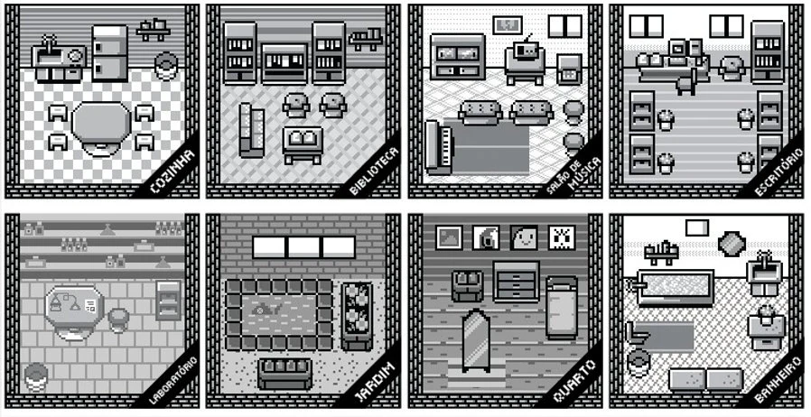

Memo
Memo is a board game inspired on famous games like Carcassone and Betrayal at the House of the Hill where the players need to collect memories to find out who they really are (or were?).
The game
The game is played with up to four players who are looking for their character's memories in a big abandoned mansion. The first player to collect each of the three types of memory cards (A, B and C) is the winner.
The board pieces should be shuffled and stacked (except the Home Room). The players start in the Home Room and play a 6 sided die to walk. When they reach the end of the turn, another piece of the board is revealed from the top of the stack and add to the table.


Team
Fernanda Nunes, Natasha Higa, Lucas Gassert, Laura Gassert, Rodrigo "Lennon" de Paula